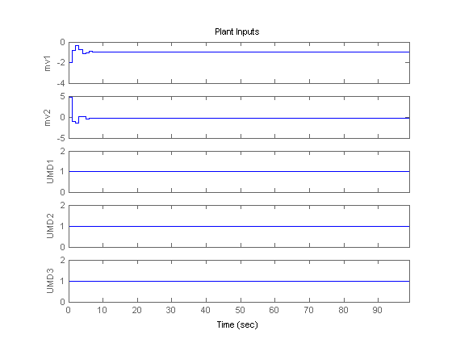
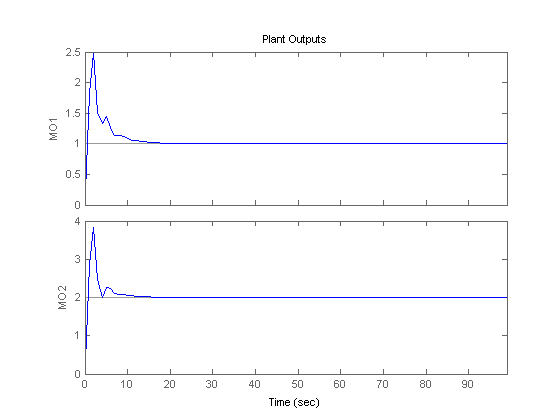

MPC Control of a MIMO System Under Plant Model Mismatch
Contents
This demonstration shows how to test an MPC controller under a mismatch between the nominal model which the controller is based on and the actual plant which is controlled by MPC. The nominal system has 2 manipulated variables, 2 unmeasured input disturbances, and 2 measured outputs. The actual plant has 3 unmeasured input disturbances and a different dynamics.
Plant Model and MPC Controller Setup
Define the parameters of the nominal plant which the MPC controller is based on.
p1 = tf(1,[1 2 1])*[1 1; 0 1];
plant = ss([p1 p1],'min');
Define inputs 1 and 2 as manipulated variables, 3 and 4 as unmeasured disturbances.
plant=setmpcsignals(plant,'MV',[1 2],'UD',[3 4]);
Also define input names.
set(plant,'InputName',{'mv1','mv2','umd3','umd4'});
For unmeasured input disturbances, the MPC controller will use the following model.
distModel = eye(2,2)*ss(-.5,1,1,0);
We are ready to create the MPC object.
mpcobj = mpc(plant,1,40,2); mpcobj.Model.Disturbance = distModel;
-->The "Weights.ManipulatedVariables" property of "mpc" object is empty. Assuming default 0.00000. -->The "Weights.ManipulatedVariablesRate" property of "mpc" object is empty. Assuming default 0.10000. -->The "Weights.OutputVariables" property of "mpc" object is empty. Assuming default 1.00000.
Define the parameters of the actual plant in closed loop with the MPC controller. Note that the actual plant has three unmeasured disturbances, while the nominal one has two.
p2 = tf(1.5,[0.1 1 2 1])*[1 1; 0 1]; psim = ss([p2 p2 tf(1,[1 1])*[0;1]],'min'); psim=setmpcsignals(psim,'MV',[1 2],'UD',[3 4 5]);
Define reference trajectories and unmeasured disturbances entering the actual plant.
dist=ones(1,3); % unmeasured disturbance trajectory refs=[1 2]; % output reference trajectory Tf=100; % total number of simulation steps
Create an MPC simulation object.
options=mpcsimopt(mpcobj); options.unmeas=dist; options.model=psim;
Simulation Using SIM Command
Run the closed-loop MPC simulation with model mismatch and unforeseen unmeasured disturbance inputs.
sim(mpcobj,Tf,refs,options);
-->Converting model to discrete time. -->Integrated white noise added on measured output channel #1. -->Integrated white noise added on measured output channel #2. -->The "Model.Noise" property of the "mpc" object is empty. Assuming white noise on each measured output channel. 